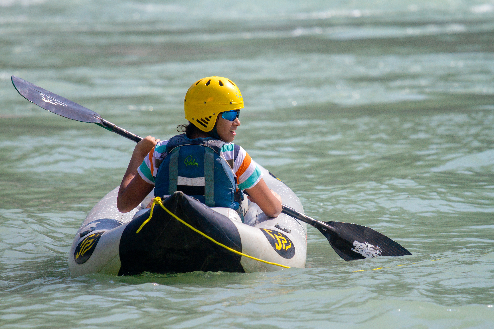

What is an Inflatable Kayak?
An Inflatable Kayak is a Kayak that is, no kidding, filled with air. I know. Buda bum tis. Seriously though, this kayak is a great choice for a slow river, beach side or lagoon. Just fill it with air, toss it in the water and relax! Not super-fast. Do not let the Gator nibble on it. Here are some basic points on an Inflatable Kayaks!
- Can be difficult for newbies due to balance
- Easy to slip in and out of
- Hard to sink
- Cheaper
- Great for warmer water